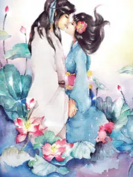

Resumen
Esta es una maravillosa historia de un hada del loto milenaria llamada Yandan.
Según el orden de aparición de los personajes masculinos:
Sr. Mountain Lord es un hombre bondadoso, gentil y silencioso, pero había convertido a Yandan en el peor ejemplo para las chicas que quieren casarse.
Sr. El Maestro Taoísta es guapo, pero sus palabras son duras y contundentes. Atrapó a Yandan, el hada del loto, la encerró en un equipo encantado y la torturó mentalmente una y otra vez.
Sr. Palace Lord es conocedor y elegante, aunque tiene la extraña costumbre de usar las caras de los demás.
Hay una cosa en común entre estos chicos, que es el hecho de que todos son prudentes y astutos. Lotus Fairy se aprovechó de su compañía trabajadora, considerada, elocuente y halagadora en una lucha entre ellos.
Detalles
Título corto : EC
Titulo original : 沉香如屑
Estado : Completed
Autor(a) : 苏寞
Género :
Adventure, Drama, Fantasy, Josei, Mystery, Romance, Supernatural, Wuxia
CAPITULOS.